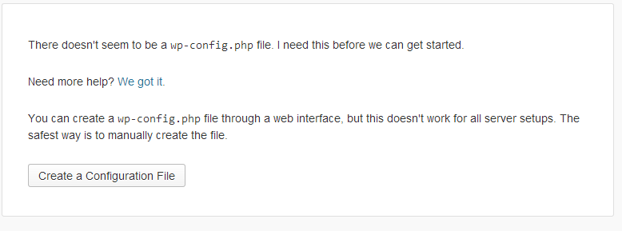
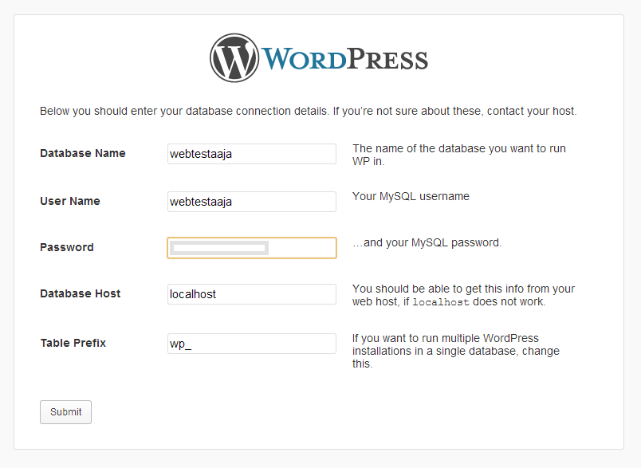
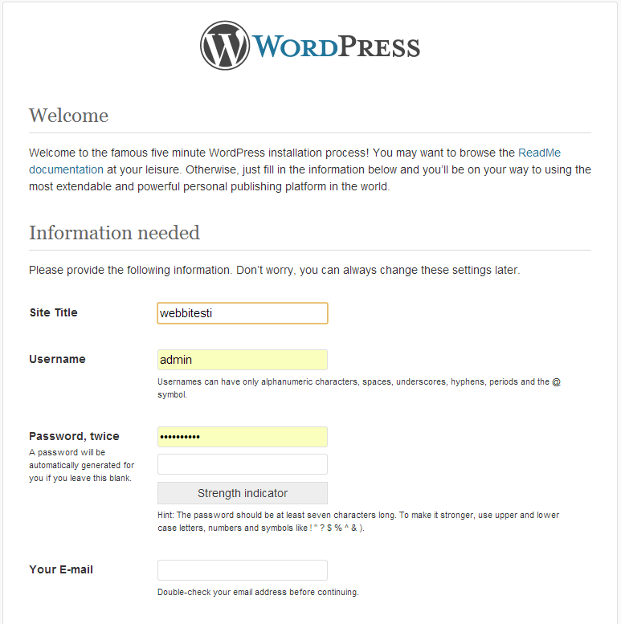

Wordpress asennus on kohtalaisen helppoa. On kuitenkin muutamia asioita jotka sinun tulee tietää ja tehdä ennen varsinaista asennusta.
1. varmista tiedostonsiirto (esimerkiksi Filezilla-ohjeemme)
2. tarvitset käyttöösi myös tekstieditorin
3. tunnukset palvelimellemme.
1. Lataa uusin WordPressin versio
2. Pura asennuspaketti johonkin kansioon koneellesi mistä saat sen kätevästi käyttöösi.
3. Varmista tietokantasi käyttäjänimi, salasana sekä tietokannan nimi
4. varmista että sinulla on paketinpurkuohjelma (esim winrar)
Olet jo valmiiksi hakenut uusimman version WordPress-ohjelmistosta ja purkanut sen omaan hakemistoonsa omalle tietokoneellesi Jos sinulla ei vielä ole tietokantaa, pyydä meitä tekemään se sinulle tai luo tietokanta itse tässä vaiheessa.
Kun olet luonut tietokannan siirrä tiedostot WordPress-kansiosta omalle palvelimellesi. Huom! Siirrä vain kansion "wordpress" sisältö, älä kansiota itsessään. Jos haluat koko sivustosi käyttämään WordPressiä, siirrä tiedostot suoraan palvelimesi juureen.(esim. http://www.esimerkki.fi/) Jos haluat esimerkiksi erillisen Blogi-osaston siirrä tiedostot kyseiseen hakemistoon (http://www.esimerkki.fi/blog/)
Tämän jälkeen navigoi selaimellasi sivullesi jolloin asennusscripti suorittaa itsensä (www.esimerkki.fi/wp-admin/install.php) Mikäli et ole luonut manuaalisesti config.php tiedostoa, WordPress luo sen automaattisesti sinulta kysymiensä tietojen mukaan.
Kun asennusskripti ajetaan, WordPress automaattisesti kysyy sinulta tiedot joita se tarvitsee.
 
Joskus WordPress config-tiedoston luominen ei onnistu automaattisesti. Config-tiedoston voi kuitenkin luoda myös manuaalisesti. seuraavien ohjeiden mukaan.
1. Navigoi tietokoneellesi kansioon ja mihin purit WordPress-asennuspaketin.
2. Etsi WordPress kansiosta "config-sample.php" niminen tiedosto ja avaa se tekstieditorissa.
3. Täytä tiedot tiedostoon.
4. Nimeä tiedosto uusiksi "wp-config.php"
5. Lataa tiedosto palvelimellesi.